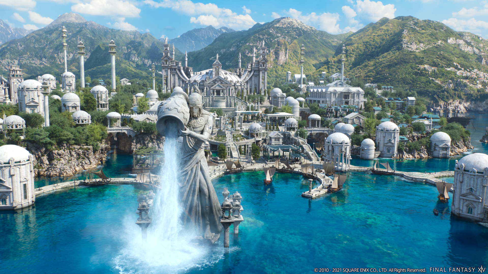
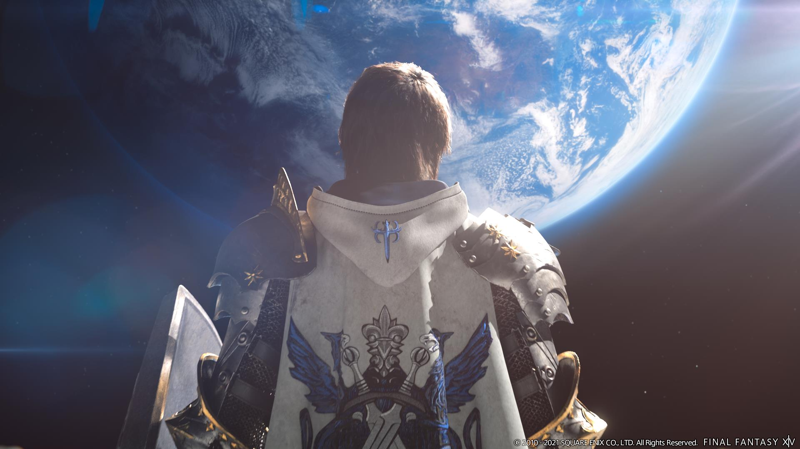

- 
- 
-

Prepare-se para a aventura épica de uma vida no Final Fantasy 14 Online: Endwalker! Junte-se a milhões de jogadores ao redor do mundo e embarque em uma jornada emocionante rumo ao limite final. Explore novos reinos misteriosos, desvende segredos antigos e lute contra poderosos inimigos neste capítulo final de uma história lendária. Com novas classes, habilidades e mecânicas de jogo aprimoradas, você terá todas as ferramentas necessárias para se tornar um verdadeiro herói. Enfrente desafios épicos em batalhas em equipe e prove seu valor nos novos conteúdos de endgame. Junte-se à batalha que decidirá o destino do mundo. Final Fantasy 14 Online: Endwalker está esperando por você!
Descubra um novo capítulo de aventuras e magia no mundo de Final Fantasy 14 Online: Endwalker! Prepare-se para explorar uma história emocionante repleta de reviravoltas, mistérios e personagens cativantes. Viaje por terras desconhecidas, repletas de paisagens deslumbrantes e criaturas impressionantes. Domine novas classes e habilidades que permitirão que você desafie seus limites e enfrente inimigos épicos. Seja parte de uma comunidade vibrante de jogadores e participe de eventos emocionantes, mas esteja preparado, pois o destino do mundo está em suas mãos. Final Fantasy 14 Online: Endwalker oferece uma experiência inigualável que irá encantar tanto os fãs de longa data como os novos jogadores. Entre neste mundo de fantasia e escreva sua própria lenda!
Prepare-se para a jornada final enquanto o destino do mundo está em suas mãos. Explore os vastos reinos, desde as imponentes montanhas até as cidades exuberantes, e descubra um enredo épico repleto de traições, sacrifícios e redenções. Domine novas classes e habilidades poderosas, unindo-se a heróis lendários em batalhas estratégicas contra ameaças cósmicas. Embarque nesta jornada final e descubra o desfecho de uma saga memorável em Final Fantasy XIV Online: Endwalker!